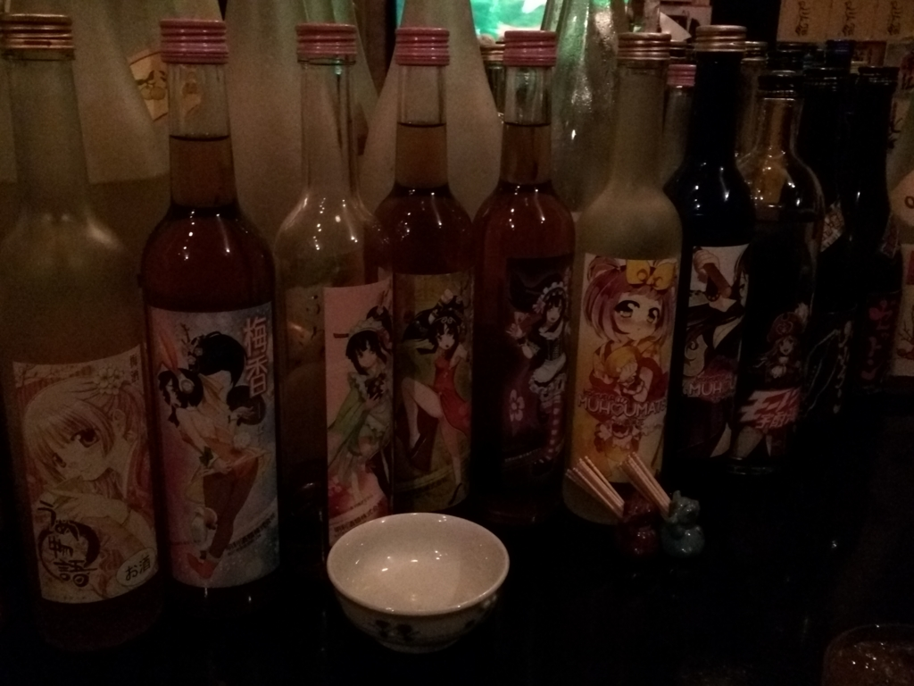

定例呑み会 in 松山：7月のなかじ会の反省
執筆日時：
「なかじ会」とは、@nakaji を中心にした月一の呑み会です。基本は月一だけど、今回は前回から2カ月近く間が空いちゃいました。いろいろ忙しかったし、多少はね？
ちなみにこの会、一部で「だるやなぎ会」などと呼ばれているらしいけど、正式名は「なかじ会」だと思うんだけど！ これは次回に参加者の意見を確認して、意思統一を図らねば……。そもそもこの会が開催されるかどうかは @nakaji のお小遣いの残り次第で決まるんだし。
――さてさて。
今回は、無職であるのになぜか“仕事”が終わらず、20分ほど遅参した。「なかじ会」での遅刻は初めてな気がする。ごめんなさい。
会場は「四国三郎 よしの川」。割と広い座敷で、無理すれば倍の10人は入れそうだった。いい忘れてたけど、参加者は @nakaji、@ramusara、@daruyanagi、そして今回初参加の @manmarud さん、そして最後に飛び入り参加してくれた J 鍵さん。
料理は割かしおいしかった。あんまり覚えていないけれど、ハギとか食べた気がする。あとは鶏のから揚げ。味がついた「ザンギ」と言うヤツだったと思う。自分はあんまり食べたことがないのだけど、美味しかったような記憶がある。
特定の地域（中国や四国地方、北海道など）による、「鶏の唐揚げ」の呼び名。または、北海道で作られる魚介類（タコやイカなど）の唐揚げの一種。さまざまな調味料（醤油やしょうが、ニンニクなど）で濃厚な味付けをした唐揚げで、北海道釧路市の「鳥松」が発祥といわれています。
「ザンギ＝鶏の唐揚げ」という意見があれば、「まったく違う別物だ」という意見もあります。個人的には唐揚げと比べてザンギは味付けが濃いような気はしますが、ザンギが唐揚げの1種であることに変わりはありません。
呑み会でなんの話をしていたのかは、正直さっぱり覚えていない。なんとなく因数分解の話をしていたのは覚えているが……文系でも因数分解ぐらいできないと困るという話なのか、文系でも普通は因数分解ができるという話だったのか。まぁ、覚えていないっていうことは、そんなにたいしたことがない話だったのだろうと思う。
二次会は @manmarud が教えてくれた「わびすけ」へ。焼酎バーになるのだろうか。薩摩人以外が飲んだら死にそうな本格派から萌えラベルの焼酎、挙句は美味しそうな梅酒まで、カウンターと棚に所狭しと並べられたビンに圧倒される。

自分は「あおちゅう」というのをいただいたが、これが割とおいしい。ロックで二杯ぐらいいただいた気がする。しかし、そこから先はあんまり覚えていない。
ここではだるやなぎ氏が「ふにゃーん」って感じになってて、マスターに「女の子紹介してくださいよー」って懇願してたのが印象的でした。
自分としてはもう少ししっかりしてると思っていたけど、第三者の冷めた目から見たらこんな感じだったんだろう。我ながら気持ち悪いおっさんだと思った。モテないのもむべなるかな。
で、今すごく不安になってきたんだけど……ここのお金、ちゃんと払ったっけ？ 帰りのタクシーは1,000円置いてきた気がするのだけど、ここの会計の記憶がない。もしかして建て替えてくれていたのならば、次回、土下座してお支払いする。許しを垂れんことを。
次の日は昼過ぎぐらいに起床。頭が痛いなんてことはまったくなかったが、胃袋のそこで焼酎がちゃぷちゃぷ言っている不快感があったので、のどちんこ引っ張って吐いたらスッキリした。ここまで飲んだのは割と久しぶりかもしれないなー。次回はふにゃーってならない程度に呑みまくろうかと思います。